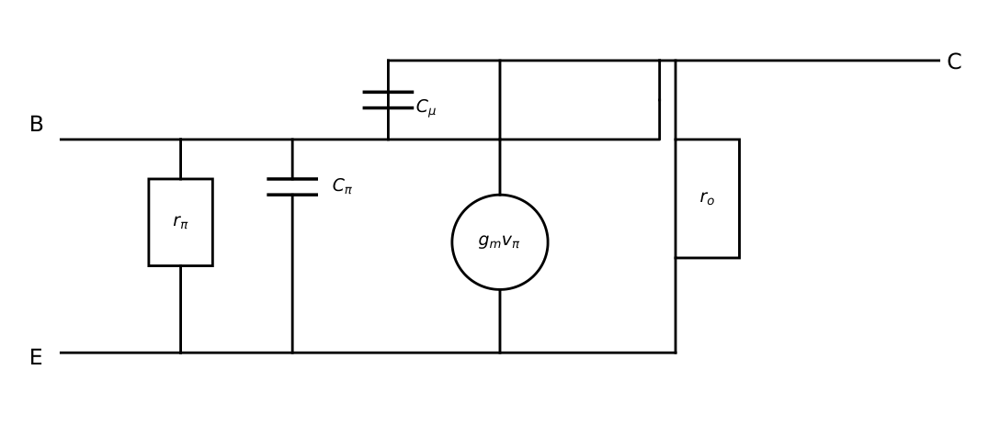

BJT DC Biasing and Small-Signal Models
In this chapter
Q-point calculation for fixed and voltage-divider bias, stability factor, saturation checks for switches, hybrid-\(\pi\) parameters (\(g_m\), \(r_\pi\), \(r_o\), \(r_e\)) and the unity-gain frequency \(f_T\).
7.1 Why bias?
A BJT amplifier needs a fixed quiescent point (Q-point) \((I_C,V_{CE})\) in the active region so that the signal swings symmetrically without clipping or entering cutoff/saturation. The bias must be stable against changes in \(\beta\), \(V_{BE}\) and \(I_{CBO}\) with temperature. The DC load line is \(V_{CE}=V_{CC}-I_CR_C\) (or \(-I_C(R_C+R_E)\)).
7.2 Bias circuits
Fixed bias: \(I_B=\dfrac{V_{CC}-V_{BE}}{R_B}\), \(I_C=\beta I_B\), \(V_{CE}=V_{CC}-I_CR_C\). Very \(\beta\)-dependent (poor stability, \(S=\beta+1\)).
Collector-to-base: \(I_B=\dfrac{V_{CC}-V_{BE}-(\beta+1)I_B R_C}{R_B}\), i.e. \(I_B=\dfrac{V_{CC}-V_{BE}}{R_B+(\beta+1)R_C}\). Negative feedback improves stability.
Voltage-divider (universal) bias: Thevenin: \(V_{BB}=V_{CC}\dfrac{R_2}{R_1+R_2}\), \(R_B=R_1\parallel R_2\).
\[
I_B=\frac{V_{BB}-V_{BE}}{R_B+(\beta+1)R_E},\quad I_C=\beta I_B,\quad V_{CE}=V_{CC}-I_CR_C-I_ER_E .
\]
If \((\beta+1)R_E\gg R_B\): \(I_E\approx\dfrac{V_{BB}-V_{BE}}{R_E}\), independent of \(\beta\).
\(V_{CC}=12\) V, \(R_B=240\,\)k\(\Omega\), \(R_C=1.5\,\)k\(\Omega\), \(\beta=100\): \(I_B=11.3/240\,\text{k}=47.1\,\mu\)A, \(I_C=4.71\) mA, \(V_{CE}=12-4.71\times1.5=4.94\) V (active, since \(>0.2\) V). If \(\beta\) doubles to 200, \(I_C=9.4\) mA and \(V_{CE}=-2.1\) V is impossible: the transistor saturates. That is the weakness of fixed bias.
\(V_{CC}=12\) V, \(R_1=30\,\)k\(\Omega\), \(R_2=10\,\)k\(\Omega\), \(R_C=2\,\)k\(\Omega\), \(R_E=1\,\)k\(\Omega\), \(\beta=100\). \(V_{BB}=3\) V, \(R_B=7.5\,\)k\(\Omega\); \(I_B=\dfrac{3-0.7}{7.5\text{k}+101\text{k}}=21.2\,\mu\)A; \(I_C=2.12\) mA, \(I_E=2.14\) mA; \(V_{CE}=12-2.12(2)-2.14(1)=5.62\) V.
7.2.1 Stability factor
\(S=\dfrac{\partial I_C}{\partial I_{CO}}=\dfrac{1+\beta}{1+\beta\dfrac{R_E}{R_E+R_B}}\) (emitter/voltage-divider bias).
For \(\beta\gg1\): \(S\approx1+\dfrac{R_B}{R_E}\). Ideal \(S\to1\). Fixed bias: \(S=1+\beta\).
Design rule for a stable divider: \(R_B\le0.1(\beta+1)R_E\) and \(V_{RE}\approx1\)–\(2\) V.
For the example above \(S=101/(1+100/8.5)=7.9\approx1+7.5=8.5\).
7.3 The BJT as a switch
Cut-off: \(V_{BE}<0.5\) V, \(I_C\approx0\). Saturation: \(I_C\approx I_{C,sat}=\dfrac{V_{CC}-V_{CE(sat)}}{R_C}\) and the drive must satisfy \(I_B\ge I_{C,sat}/\beta\) (usually drive 2–5 times harder for speed). Turn-off is slowed by the storage delay of excess base charge.
\(V_{CC}=5\) V, \(R_C=1\,\)k\(\Omega\), \(\beta=50\), \(V_{CE(sat)}=0.2\) V: \(I_{C,sat}=4.8\) mA, \(I_{B,min}=96\,\mu\)A. With \(V_{in}=5\) V, \(R_B\le(5-0.7)/96\,\mu\text{A}=44.8\,\)k\(\Omega\).
7.4 Small-signal (hybrid-\(\pi\)) model
For small signals around the Q-point the BJT is a linear voltage-controlled current source.

\(g_m=\dfrac{I_C}{V_T}\) (\(38.6\) mS at 1 mA). \(r_\pi=\dfrac{\beta}{g_m}=\dfrac{\beta V_T}{I_C}\). \(r_o=\dfrac{V_A}{I_C}\). \(r_e=\dfrac{V_T}{I_E}=\dfrac{\alpha}{g_m}\approx\dfrac1{g_m}\).
\(i_c=g_mv_{be}=\beta i_b\). \(\beta_0=g_mr_\pi\). T-model: \(r_e\) in the emitter.
\(h\)-parameters: \(h_{ie}=r_\pi\), \(h_{fe}=\beta\), \(h_{oe}=1/r_o\), \(h_{re}\approx0\).
\(I_C=2.12\) mA: \(g_m=82\) mS, \(r_\pi=100/0.082=1.22\,\)k\(\Omega\). At \(I_C=1\) mA with \(\beta=100\): \(r_\pi=2.59\,\)k\(\Omega\); with \(V_A=100\) V, \(r_o=100\,\)k\(\Omega\).
7.4.1 High-frequency behaviour
\(C_\pi=g_m\tau_F+C_{je}\) (diffusion plus depletion), \(C_\mu=\) collector–base depletion capacitance.
Current gain \(\beta(f)=\dfrac{\beta_0}{1+jf/f_\beta}\) with \(f_\beta=\dfrac1{2\pi r_\pi(C_\pi+C_\mu)}\).
Transition frequency (unity current gain): \(f_T=\beta_0f_\beta=\dfrac{g_m}{2\pi(C_\pi+C_\mu)}\). Limited by \(\tau_F=W_B^2/2D_n\).
\(g_m=40\) mS, \(C_\pi=10\) pF, \(C_\mu=1\) pF \(\Rightarrow f_T=\dfrac{0.04}{2\pi\times11\times10^{-12}}=579\) MHz. \(f_T\) rises with \(I_C\) up to the high-injection limit.
(i) In the divider-bias formula use \((\beta+1)R_E\), not \(\beta R_E\) alone, when computing \(I_B\). (ii) Check \(V_{CE}>V_{CE(sat)}\) after the active-region assumption. (iii) \(g_m\) depends only on \(I_C\) (and temperature), not on \(\beta\). (iv) \(r_\pi\propto\beta/I_C\), so it grows with \(\beta\). (v) \(r_e\) looks into the emitter, \(r_\pi\) into the base: \(r_\pi=(\beta+1)r_e\).
Divider bias with a stiff divider: \(V_E\approx V_{BB}-0.7\), \(I_C\approx V_E/R_E\), \(V_{CE}=V_{CC}-I_C(R_C+R_E)\). Small signal: \(g_m=40I_C\) (S per A, at 300 K), \(r_\pi=\beta/g_m\).
7.5 GATE problems
Q1. The bias circuit with the best stability factor among the following is (A) fixed bias (B) collector-to-base (C) voltage-divider with emitter resistor (D) base bias with no \(R_E\).
Q2. \(g_m\) of a BJT at \(I_C=2\) mA (\(V_T=25.9\) mV) is (A) 77 mS (B) 2 mS (C) 0.77 S (D) 7.7 mS.
Q3. \(r_\pi\) equals (A) \(g_m/\beta\) (B) \(\beta/g_m\) (C) \(\beta g_m\) (D) \(V_A/I_C\).
Q4. A transistor in saturation satisfies (A) \(I_C=\beta I_B\) (B) \(I_C<\beta I_B\) (C) \(I_C>\beta I_B\) (D) \(I_B=0\).
Answers: Q1 (C). Q2 (A). Q3 (B). Q4 (B).
Q5. Fixed bias: \(V_{CC}=12\) V, \(R_B=240\,\)k\(\Omega\), \(R_C=1.5\,\)k\(\Omega\), \(\beta=100\), \(V_{BE}=0.7\) V. \(V_{CE}\) is (A) 4.9 V (B) 7.1 V (C) 0.2 V (D) 12 V.
Q6. Divider bias: \(R_1=30\,\)k, \(R_2=10\,\)k, \(R_C=2\,\)k, \(R_E=1\,\)k, \(V_{CC}=12\) V, \(\beta=100\). \(I_C\) is (A) 1.0 mA (B) 2.1 mA (C) 3.0 mA (D) 4.2 mA.
Q7. \(g_m=40\) mS, \(C_\pi=10\) pF, \(C_\mu=1\) pF. \(f_T\) is approximately (A) 58 MHz (B) 290 MHz (C) 580 MHz (D) 1.2 GHz.
Answers: Q5 (A): \(4.94\) V. Q6 (B): \(2.12\) mA. Q7 (C): \(579\) MHz.
Q8. \(R_B\) (k\(\Omega\), one decimal) at most, to saturate the switch (\(V_{CC}=5\) V, \(R_C=1\,\)k, \(\beta=50\), \(V_{CE(sat)}=0.2\) V, \(V_{in}=5\) V, \(V_{BE}=0.7\) V): .
Q9. \(r_\pi\) (k\(\Omega\), two decimals) at \(I_C=1\) mA, \(\beta=100\), \(V_T=25.9\) mV: .
Answers: Q8: \(44.8\). Q9: \(2.59\).
Q10. Which statements hold? (A) \(g_m\) is proportional to \(I_C\). (B) Fixed bias has stability factor \(\beta+1\). (C) \(r_o=V_A/I_C\). (D) \(f_T\) is independent of \(g_m\).
Answers: Q10: (A), (B), (C).
T1. \(S\) for \(R_B=5\,\)k, \(R_E=1\,\)k, large \(\beta\). T2. Write \(f_T\). T3. \(r_e\) at \(I_E=1\) mA.
Answers: T1: about \(6\). T2: \(g_m/[2\pi(C_\pi+C_\mu)]\). T3: \(25.9\,\Omega\).
- Divider bias: \(I_B=(V_{BB}-V_{BE})/[R_B+(\beta+1)R_E]\); \(S\approx1+R_B/R_E\).
- Switch: \(I_B\ge I_{C,sat}/\beta\). Saturation: \(I_C<\beta I_B\).
- \(g_m=I_C/V_T\), \(r_\pi=\beta/g_m\), \(r_o=V_A/I_C\), \(r_e\approx1/g_m\); \(f_T=g_m/2\pi(C_\pi+C_\mu)\).